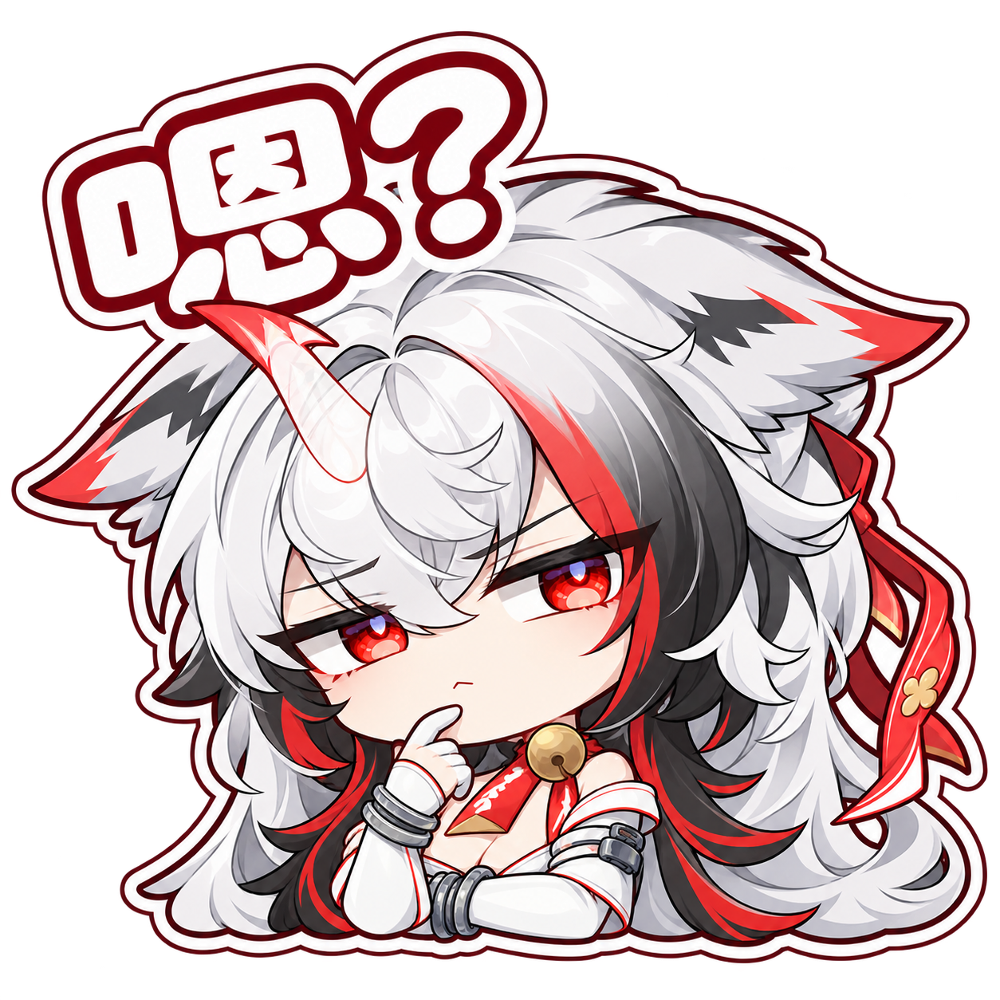
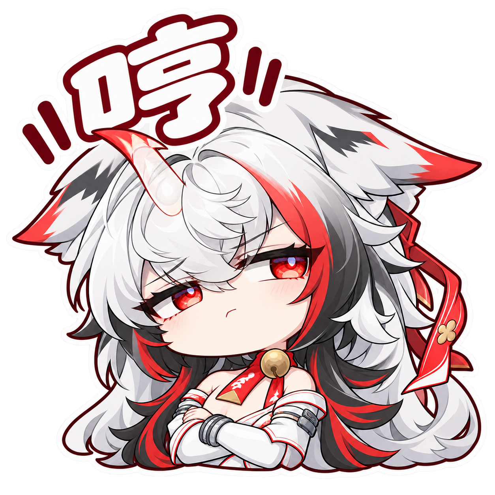
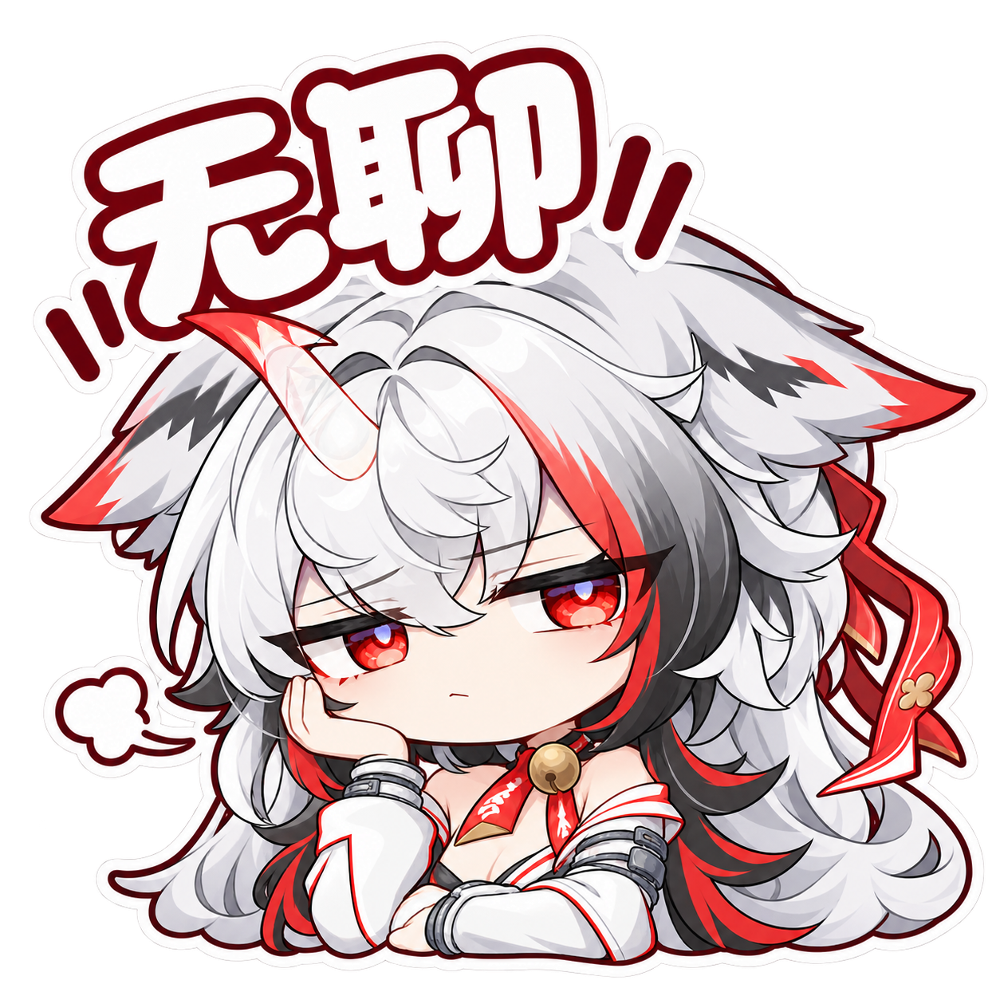
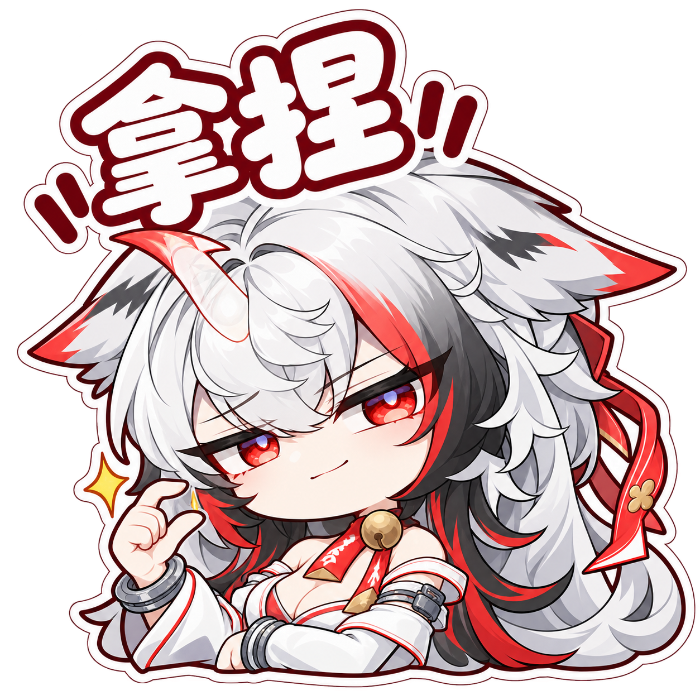

<!doctype html><html lang="zh-CN"><meta charset="utf-8"><meta name="viewport" content="width=device-width,initial-scale=1"><title>叶瞬光 · 双形态表情包</title><style>body{margin:0;background:#faf5f2;color:#452631;font-family:"Microsoft YaHei",sans-serif}main{max-width:1300px;margin:auto;padding:36px 24px}h1{font-size:30px;margin:0 0 8px}p{color:#856772}.grid{display:grid;grid-template-columns:repeat(auto-fit,minmax(210px,1fr));gap:20px}figure{margin:0;background:white;border-radius:20px;overflow:hidden;box-shadow:0 4px 22px #693c4710}figure a{display:block;background:repeating-conic-gradient(#fff 0% 25%,#f0eeed 0% 50%) 0/20px 20px}img{display:block;width:100%;aspect-ratio:1;object-fit:contain}figcaption{padding:14px 18px;font-weight:bold}small{float:right;color:#9e7c85;font-weight:normal}h2{margin-top:36px;font-size:21px}</style><main><h1>叶瞬光 · 双形态表情包</h1><p>20 个表情 · 点击查看原图</p><h2>红色形态 · 温柔治愈</h2><div class="grid"><figure><a href="01-red-thanks.png"></a><figcaption>谢谢<small>01</small></figcaption></figure><figure><a href="02-red-shy.png"></a><figcaption>戳手手<small>02</small></figcaption></figure><figure><a href="03-red-hug.png"></a><figcaption>抱抱<small>03</small></figcaption></figure><figure><a href="04-red-cheer.png"></a><figcaption>加油<small>04</small></figcaption></figure><figure><a href="05-red-heart.png"></a><figcaption>比心<small>05</small></figcaption></figure><figure><a href="06-red-morning.png"></a><figcaption>早安<small>06</small></figcaption></figure><figure><a href="07-red-night.png"></a><figcaption>晚安<small>07</small></figcaption></figure><figure><a href="08-red-sorry.png"></a><figcaption>对不起<small>08</small></figcaption></figure><figure><a href="09-red-welcome.png"></a><figcaption>欢迎回来<small>09</small></figcaption></figure><figure><a href="10-red-pat.png"></a><figcaption>摸摸头<small>10</small></figcaption></figure><figure><a href="11-red-moved.png"></a><figcaption>感动<small>11</small></figcaption></figure><figure><a href="12-red-hehe.png"></a><figcaption>嘿嘿<small>12</small></figcaption></figure></div><h2>白色形态 · 高冷吐槽</h2><div class="grid"><figure><a href="13-white-jibini.png"></a><figcaption>叽哔你<small>13</small></figcaption></figure><figure><a href="14-white-quiet.png"></a><figcaption>闭嘴<small>14</small></figcaption></figure><figure><a href="15-white-huh.png"></a><figcaption>嗯？<small>15</small></figcaption></figure><figure><a href="16-white-stare.png"></a><figcaption>盯——<small>16</small></figcaption></figure><figure><a href="17-white-hmph.png"></a><figcaption>哼<small>17</small></figcaption></figure><figure><a href="18-white-boring.png"></a><figcaption>无聊<small>18</small></figcaption></figure><figure><a href="19-white-refuse.png"></a><figcaption>拒绝<small>19</small></figcaption></figure><figure><a href="20-white-gotyou.png"></a><figcaption>拿捏<small>20</small></figcaption></figure></div></main></html>
